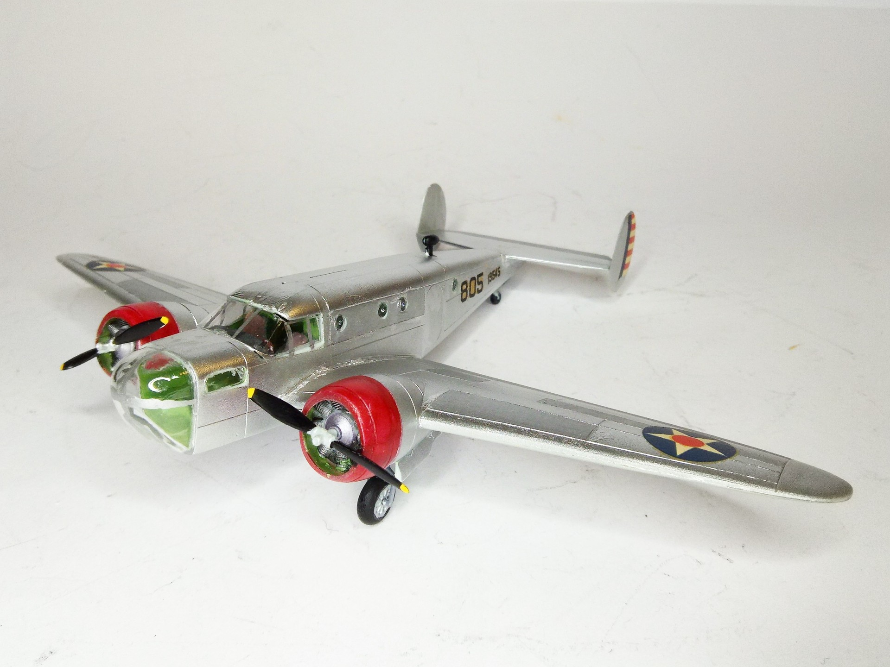
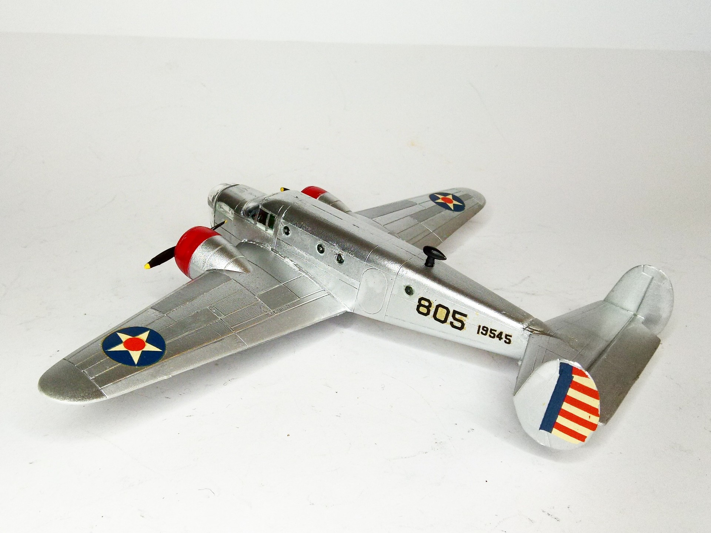

Aerei · scale model archive
Beechcraft AT-11 Kansan
Beechcraft AT-11 Kansan — Kit: PM Models, Scale: 1/72. First attempt to highlight different natural metal panels #1/72 #PMModls #scaleplanes…

Photo gallery

English description
First attempt to highlight different natural metal panels
#1/72 #PMModls #scaleplanes
#plasticmodels #Beechcraft #Kansan
Descrizione italiana
Primo tentativo di evidenziare pannelli in metallo naturale differenti.